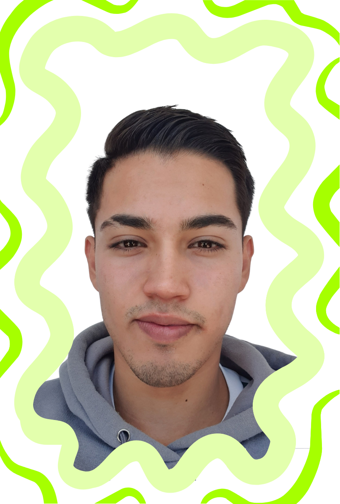

Bernardo Ruiz
El Mago del Código 🧙♂️💻
Apasionado por la tecnología y el desarrollo web, Berny es quien da vida digital a Happy Socks. Con sus habilidades en programación, asegura que la experiencia del usuario sea fluida, moderna y dinámica. 🚀
Nota de Berny:
Desde que descubrí la programación, supe que quería dedicarme a este mundo. Estudio Ingeniería en Tecnologías de la Información y disfruto desarrollando soluciones web, explorando nuevas tecnologías y enfrentando desafíos que me ayuden a mejorar como desarrollador.
Además de la tecnología, el gimnasio es una parte esencial de mi rutina diaria. Para mí, la disciplina y la constancia en el entrenamiento no solo fortalecen el cuerpo, sino también la mentalidad, algo que aplico en mi aprendizaje y en mi forma de afrontar proyectos.
Me entusiasma la idea de seguir creciendo en este campo, no solo aprendiendo de programadores más experimentados, sino también compartiendo mis propios conocimientos y experiencias. Quiero desarrollar soluciones tecnológicas que tengan un impacto real, aprovechando mi creatividad y habilidades para optimizar procesos y resolver problemas de manera eficiente. Mi meta es convertirme en un profesional altamente competente y seguir explorando los límites de la innovación en IT. 🚀✨
Ana Sofía Ruiz
La Artista del Diseño🖌️🎭
Cada color, cada patrón y cada detalle visual de Happy Socks tiene su toque creativo. Sof transforma ideas en diseños vibrantes que reflejan la alegría y energía de la marca. 🌈✨
Nota de Ana Sof:
Soy una estudiante de Ingeniería en Tecnologías de la Información apasionada por el desarrollo web y la programación. Me encanta aprender nuevas tecnologías y mejorar mis habilidades en el área de IT, siempre buscando retos que me ayuden a crecer como desarrolladora.
Además de mi interés por la tecnología, disfruto mantenerme activa y saludable, por lo que el gimnasio es una parte importante de mi rutina diaria. Creo que la disciplina y la constancia que aplico en el ejercicio también se reflejan en mi forma de trabajar y aprender.
Uno de mis objetivos es seguir conociendo a programadores más experimentados para aprender de ellos y mejorar mis habilidades. Me motiva la idea de contribuir con soluciones innovadoras y creativas a problemas tecnológicos, y estoy comprometida con mi desarrollo profesional en el mundo de la ingeniería. 🚀✨
Javier Mejía
El Arquitecto Digital 🏗️📐
La estructura y funcionalidad del sitio. Javi se encarga de que todo esté bien organizado, optimizado y fácil de navegar. Su trabajo garantiza que la plataforma sea accesible y estéticamente armoniosa. 📊